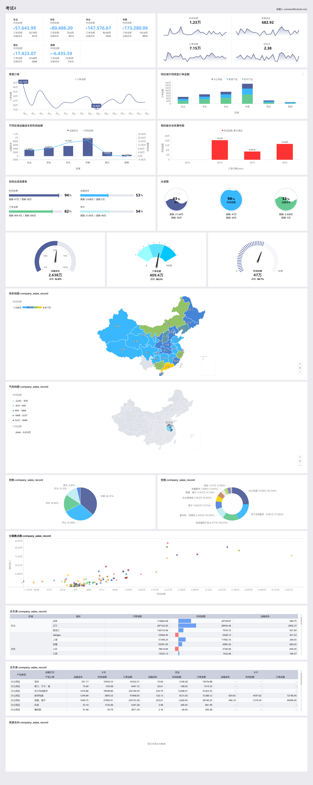

课程列表
本章节将为您介绍仪表板的基本概念，包括仪表板中数据图表的类型、使用场景和组成图表的数据要素。
仪表板采用了灵活的磁贴式布局来显示报表数据的交互，它不仅可以将数据以可视化的方式呈现，还支持通过各种数据筛选和查询，使用各种数据展现方式，突出数据中的关键字段。
从数据的展示层面看，仪表板通过引导，拖拽，双击字段，让数据展示得更加直观明了；从数据的分析层面看，通过友好的提示，提升用户的交互体验。
数据在展示性能上也有了更大的提升，在仪表板的编辑页面就可以实现动态数据的查询。
仪表板制作整体流程

仪表板制作从新建仪表板开始，仪表板区域的整个操作请参见仪表板操作。
以可视化图表为中心，你可以实现条件过滤，优化界面布局和展示方式，同时可进行钻取、联动、分析预警等多种可视化分析操作。请参见查询控件和其他控件。
仪表板制作步骤
考试
仪表板制作
